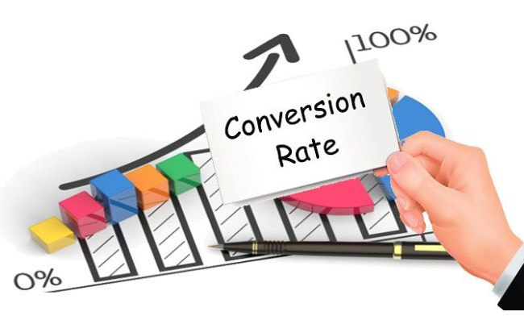

Transform pixel values into REM units effortlessly with our converter tool. This feature allows developers to maintain consistent, scalable designs across various devices by leveraging the root element's font size as a basis for relative measurements.
Percentage to EM Conversion
Simplify the process of converting percentage values to EM units with our intuitive converter. EM units, based on the parent element's font size, provide a flexible approach for designing responsive and adaptable web elements.
Pixels to Percentage Conversion
Convert pixel values into percentage units quickly and accurately. This tool helps in creating responsive layouts by enabling the transformation of fixed measurements into scalable percentages relative to their parent elements.

REM to EM Conversion
Easily convert REM units to EM units with our reliable converter. This feature ensures a seamless transition between these two relative units, enhancing your ability to design dynamic and adaptable web content.